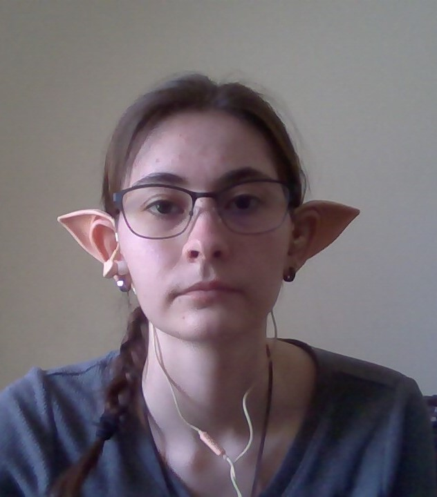
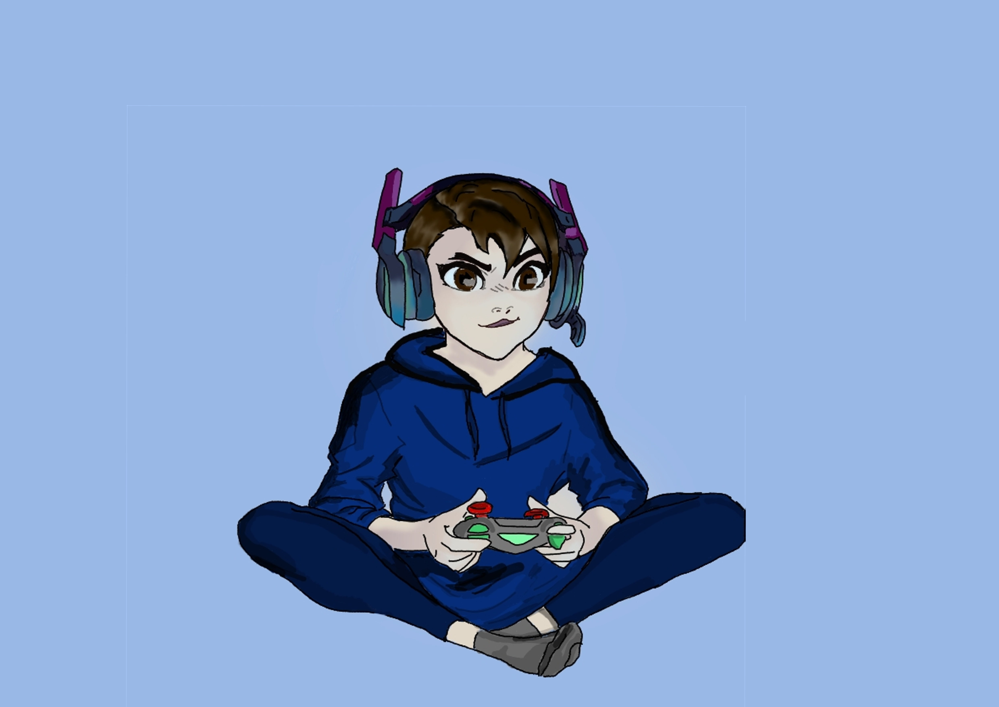
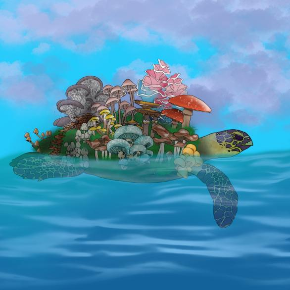
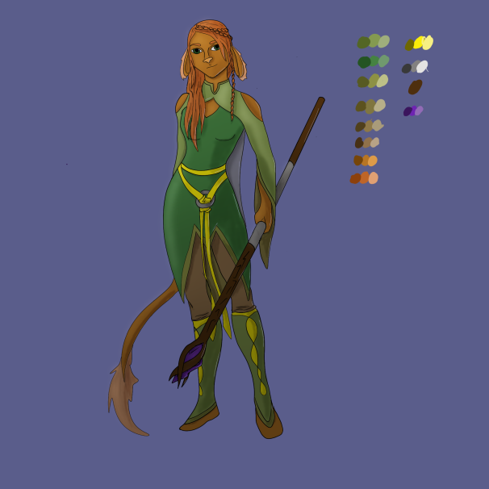

Kelsey's Homepage

About Me
Welcome to my homepage! My name is Kelsey and I am a digital artist. I am currently a third year student at University of California, Santa Cruz. I am persuing a degree in Art and Design: Game and Playable Media. With this degree and the skills I have aquired throughout my schooling I hope to be able to get a job within the game industry. Some of my hobbies outside of digital art include: native american beadwork, creative writing, cross-stiching, playing Dungeons and Dragons, and reading.
  Some of my skills:
- 3D modeling
- 2D design/asset creation
- Character creation
- UV texture maping
- 2D & 3D Animation
- level design
Some of my software experience:
- Blender
- Twine
- Unity
- Construct 3
- Phaser
- Adobe programs:
- Photoshop
- Illustrator
- Substance 3D Painter
- Premiere Rush
- After Effects